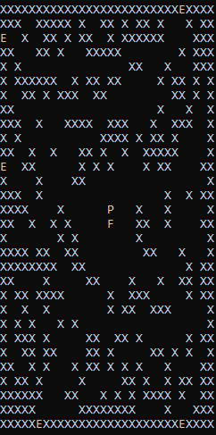
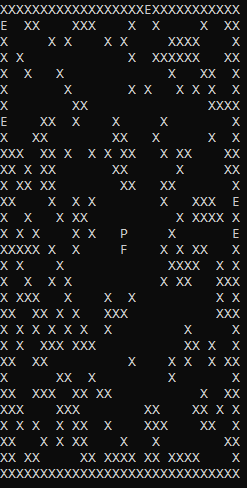
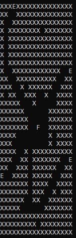
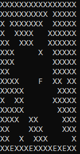

What is it?
- For this assignment, we had to design a program which could generate, test, and play a maze in which players started at various different entrances, and finished at the centre. The maze had to be represented in the console, and required checking for deadlock scenarios with the AI, that it was possible to complete the maze that had been generated, and that the mazes could be saved to, and loaded from text files. 
- There were some specific rules, such as how certain parts of the maze should look, like the centre needing to be a certain size, and the flag and entrances needing a specific character, but broadly, a lot of how the maze game would work was left for us to decide on an individual basis, in a way that would properly show off the features we were programming.
How it works
- In my case, I decided to use a simple line interpolation algorithm to generate paths, and then used a random function to pick a certain number of co-ordinates on each line to make into a path to add some variation. The program also required that a large number of tests could be done automatically with random values, and that users could either specify details for a maze, or load one from a file, which would then be checked for correctness. These were all features I attempted to create, although I didn’t have time to validate the maze files properly. Additionally, feedback notes that there were occasional crashes on reading in files, which I did find in testing, but unfortunately didn’t have time to fix.
Observations
- I particularly enjoyed the challenge of coming up with how each feature would work, as there was no guidance beyond the intended effect. This proved to be the perfect catalyst for creativity, in allowing me enough freedom to try many different approaches and pick one I was happy with. It was also the first time I’d really used saving and loading in a program. I had written to files previously, particularly on testing my results for my year 3 project and dissertation, but loading in objects wasn’t something I was used to. It made the process far less intimidating, and helped greatly on Shuttle Engine with my application of serialisation.
How successful has it been?
- There were some small issues with the menu loop which I didn’t have time to fix, occasional crashes in file reading as mentioned previously, and there were some advanced features I ran out of time to put in. Overall, my mark was 76%, which I am happy with, and can easily see where I could improve.
What would I do differently if I started over?
- I would have explored more methods of generating paths. Interpolation worked very well, but it could be uninteresting and create unwanted overlaps. The results from the generator also didn't look much like mazes I was used to. While that’s not necessarily a problem, and functionally it’s the same as any other maze, it made my work seem a little less stylish, and made me reconsider how I was doing things, although I didn’t have time to go back and add more or change it too much.
How I've been able to use it
- The project was a good refresher on pathfinding for a start. I’d encountered it for the first time on my year 3 dissertation at the tag end, and then further on in the gaming simulations project where I’d implemented it better. Repeating it for a third time helped me understand better, and I was able to implement some pathfinding in Shuttle Engine relatively easily because of it. As mentioned previously, it did also make serialisation and deserialisation less intimidating, which was handy when I was adding this to Shuttle Engine. Finally, it was a good experience in managing a project which was very creatively open ended, while also keeping control over my expectations of functionality.
Random spaces set to 60%
Low random spaces
Maze with overlapping paths